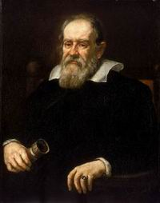

NO ME SALEN
PROBLEMAS RESUELTOS DE FÍSICA DEL CBC
(Leyes de Newton)
|
|

|
 |
1.27- Se dejan caer dos bolsas verticalmente
una arriba de la otra unidas por una cuerda hallar el valor de la tensión en la soga cuando...
1ro.) La de arriba es de 4 kg y la de abajo de
9 kg:
a) 4 kg b) 5 kg c) cero d) un valor distinto a los anteriores.
2do. ) La de arriba es de 9 kg y la de abajo
4 kg:
a) 4 kg b) 5 kg c) cero d) un valor distinto a los anteriores. |
|
Este ejercicio tiene un interés histórico particular. Bien podríamos resolverlo del modo estándar, con un DCL y las ecuaciones de Newton (y lo vamos a hacer), pero también podemos resolverlo como lo hizo Galileo Galilei unos 50 años antes de que existieran Newton y sus ecuaciones.
Lo hizo de un modo especulativo -simple lógica y sentido común- y absolutamente correcto. El resultado de su razonamiento no sólo le permitió responder a la misma pregunta que hace este ejercicio sino que lo llevó a conclusiones asombrosas y revolucionarias. |
|
 |
|
|
|
Te lo cuento: como vos sabés, a Galileo lo obsesionaba el asunto de la caída de los cuerpos. Ya se había dado cuenta que el aire complicaba el asunto, de modo que era mejor hacer experimentos mentales (en los que podía despreciarse el efecto del aire) que reales (en los que no se podía evitar esa perturbación). Bien, supongamos que tenemos dos cubitos de arena iguales, que nos prepara mi sobrinito con un moldecito. Para que no se vuele arena ni se desarmen los cubos mientras caen conviene que la arena esté un poco mojada... pero si no tenés agua a mano no importa, ponele un poquito más de imaginación. |
|
|
 |
Soltamos desde la misma altura dos cubitos de arena del mismo tamaño -por supuesto- con la misma cantidad de arena. A Galileo y a todos sus contemporáneos les pareció sensato suponer que ambos caerían "al mismo tiempo". No sería lógico que uno de los dos fuese más rápido y le ganase al otro la carrera de la caída. Y tenían razón.
También se pusieron de acuerdo en que la caída era acelerada -cada vez más rápida-, aunque no supieran por qué. No interesaba tanto ese asunto. Lo que interesaba era que ninguno le ganaba al otro; por lo tanto, ambos caían con igual aceleración. |
 |
La primera parte del genial experimento mental de Galileo fue la siguiente: ¿cambia en algo el experimento si al soltar los cubos de arena se hallan muy próximos entre sí? La respuesta lógica es NO, no cambia nada. Siguen cayendo ambos con igual aceleración.
Incluso pueden estar tan próximos uno de otro que los podemos considerar un único cuerpo de arena, que, -en principio- debería caer sin inclinarse para ningún lado... sin que ninguna parte del cuerpo le quiera ganar la carrera de la caída a otra. Pura lógica. |
 |
Entonces, ese cuerpo de arena "doble" debe caer con la misma aceleración que un cubo simple. Y si cayesen al mismo tiempo dos cuerpos de arena -uno simple y uno doble- ninguno podría ganarle la carrera al otro: ambos caerían con la misma aceleración.
El experimento mental progresa prácticamente solo. |
 |
Podríamos lanzarlos muy próximos uno de otro y se comportarían como un único cuerpo de arena de masa triple que la de los cubitos simples del inicio del experimento. Todos tendrían que caer con la misma aceleración. El cuerpo "triple" no se inclinaría para ningún lado durante la caída... ni aunque su porción doble tenga el doble de masa que su porción simple. |
|
Ahora viene un toque de distinción.
Toda la disquisición previa es igualmente válida si los cuerpos se sueltan al mismo tiempo pero desde alturas diferentes. Gana la carrera el de abajo pero porque salió un cacho más abajo. Y llega al piso con exactamente la misma ventaja que tenía arriba. O sea, bajaron juntos... con la misma velocidad, con la misma aceleración. |
 |
Acá tenemos una combinación de los razonamientos anteriores. Se sueltan distintos cuerpos de arena muy pero muy próximos entre sí. Tanto que si querés podés considerarlos un único cuerpo. Pero también podés podés seguir considerándolos cuerpos diferentes, por ejemplo el de arriba de 4 kg y el de abajo de 9 kg, como en el ejercicio de la Guía. |
|
|
|
La frutilla de la torta: ponele que en alguna parte de nuestro experimento mental ya sea en esos momentos en que colocábamos dos cubos muy próximos entre sí, o en otro momento en el que decidíamos que un cuerpo de arena no era un único cuerpo sino dos cuerpos diferentes pero pegados uno al otro, un pelito queda en el medio de la union, con un extremo metido en un cuerpo y otro extremo en el otro... Parece obvio que ese pelito, aunque estuviese anclado fuertemente con cada cuerpo en sus extremos, no haría ninguna fuerza, no cumpliría ningún papel diferente del de otro granito de arena más.
Así, con pura lógica, Galileo concluyó que todos los cuerpos debían caer con igual aceleración independientemente de su masa (eso le provocó un patatús a Aristóteles, en su tumba), y que la caída no agregaba fuerzas internas. O sea, para nuestro ejercicio, T = 0.
50 años después, Newton encontró una justificación física que verificaba el razonamiento de Galileo. Vamos con su método. Empieza con un DCL. |
|
|
 |
Llamé A al cuerpo de arriba y B al de abajo. Sobre A actúa la fuerza con que lo atrae la Tierra, PA, y la fuerza con que tira la soga, TA, ambas hacia abajo. Sobre B actua también la Tierra, PB, y la soga, pero ahora tirando hacia arriba.
Con un sistema de referencia vertical que apunte hacia abajo, las ecuaciones de Newton dirán: |
|
|
|
Bolsa A → ΣFy = mA ay → PA + TA = mA . aA
Bolsa B → ΣFy = mB ay → PB — TB = mB . aB
Como la soga es inextensible las aceleraciones deben ser iguales (*). También ocurre que la tensión es la misma en ambos extremos, de modo que las ecuaciones quedan así:
PA + T = mA . a
PB — T = mB . a
Las ecuaciones forman un sistema de dos incógnitas, una de ellas, la que figura la pregunta del enunciado: la tensión de la cuerda. OK, dejemos la física por un rato y dediquémosnos al álgebra.
Sumemos miembro a miembro esas dos ecuaciones
PA + PB — T + T = mA . a + mB . a
PA + PB = mA . a + mB . a
mA . g + mB . g = mA . a + mB . a
g . ( mA + mB ) = a . ( mA + mB )
a = g
La aceleración de caída resulta ser g. Ahora restemos miembro a miembro las dos ecuaciones:
PA — PB + T + T = mA . a — mB . a
y reemplacemos la aceleración:
mA . g — mB . g + 2 T = mA . g — mB . g
2 T = 0
T = 0
|
|
|
|
|
|
| Como encuentro que el resultado es independiente de las masas de las bolsas no interesa si ponemos la pesada arriba de la liviana o a la inversa. Es lo mismo. |
|
|
*NOTA: Podría ser inextensible pero ir arrugándose mientras las bolsas caen. Ese sería el caso en que la bolsa de arriba acelere más que la de abajo mientras caen. Pero aún así, llegaría el momento en que se juntan en el aire, y como no pueden atravesarse mutuamente, deben continuar con la misma aceleración. Lo único que cambiaría sería el sentido de la fuerza de contacto (contraria al que le asigné a las tensiones). Hilar fino, que le dicen. |
|
 |
DESAFIO: La historia que te conté de Galileo, suele venir acompañada de la fábula de la Torre de Pisa. Se cree que ese experimento (arrojar dos cuerpos de igual forma y tamaño pero diferente masa) no se llevó a cabo. Uno de los motivos que tenía Galileo para no realizarlo era que él sabía que la interacción de los cuerpos con el aire durante la caída le arruinaría el éxito.
Newton no sólo arribó a una solución teórica del asunto, también logró la demostración experimental que Galileo no pudo hacer y que hoy es famosa. ¿Podés averiguar de cuál se trata? |
|
| |
|
| |
|
| Algunos derechos reservados.
Se permite su reproducción bajo la solemne promesa de citar la fuente con mucho amor y cariño. Última actualización mar-08. Buenos Aires, Argentina. |
|
|
|